Explore
If you've Installed & Configured Latent Scope and generated Your first scope you are ready to explore your data!
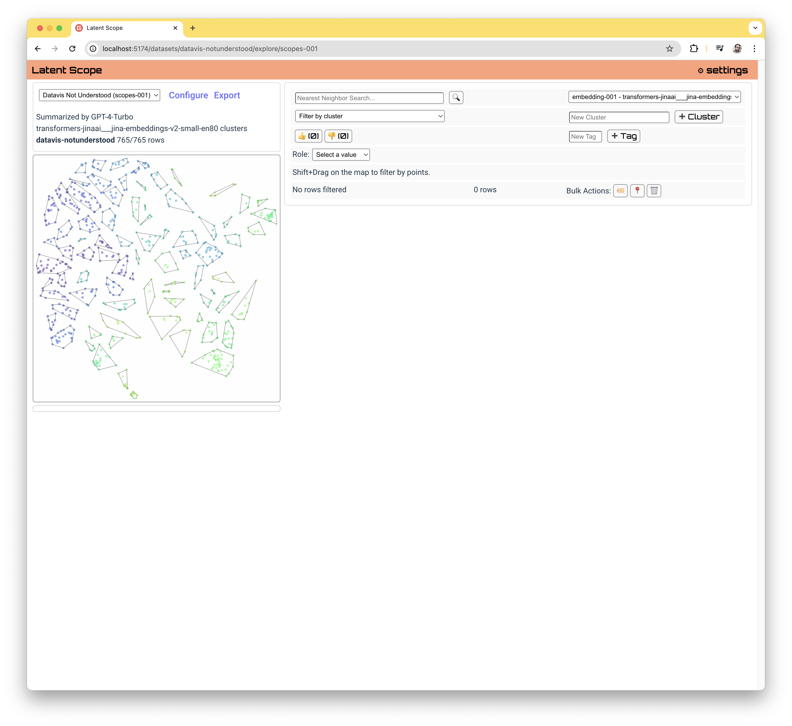The first thing you may notice is that you can interact with the map visualization on the left. You can pan and zoom.
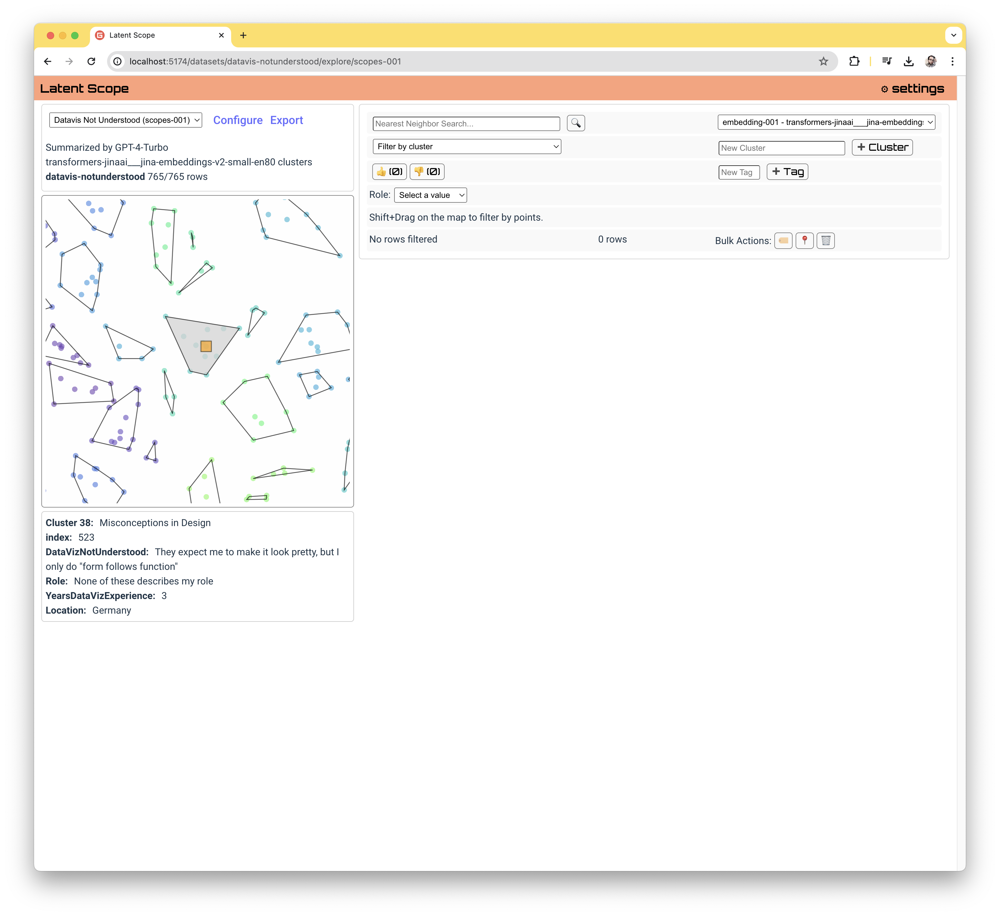You can hover over points to see their values, clicking and dragging will lasso select multiple points.
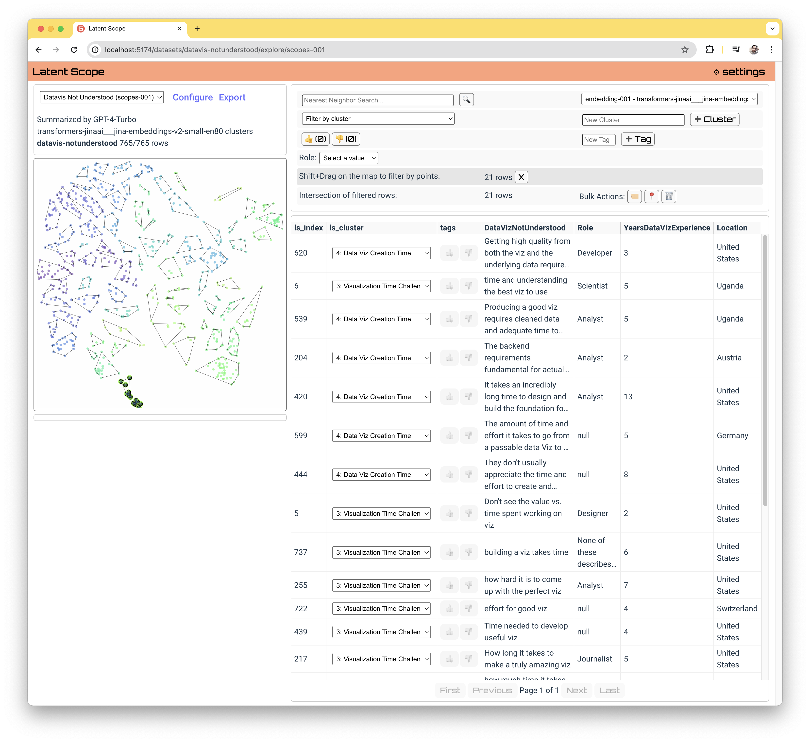Filters
The panel at the top right of the page provides a number of ways to filter your data.
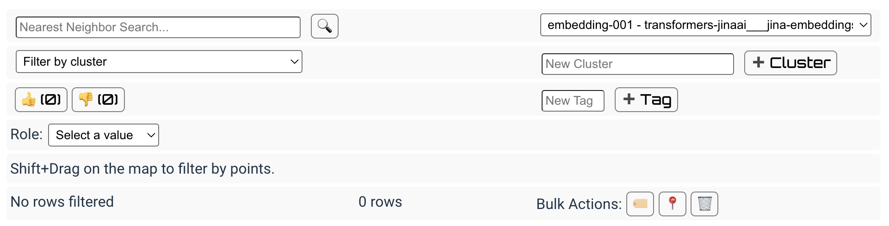All rows of your data that match the filters will be shown in the table below and highlighted on the map. We will also cover bulk actions on filtered rows later in this guide. First, let's go through each of the filters.
Filters: Similarity Search
You can do a nearest neighbors similarity search by embedding the search text with the same embedding model used to create your scope.
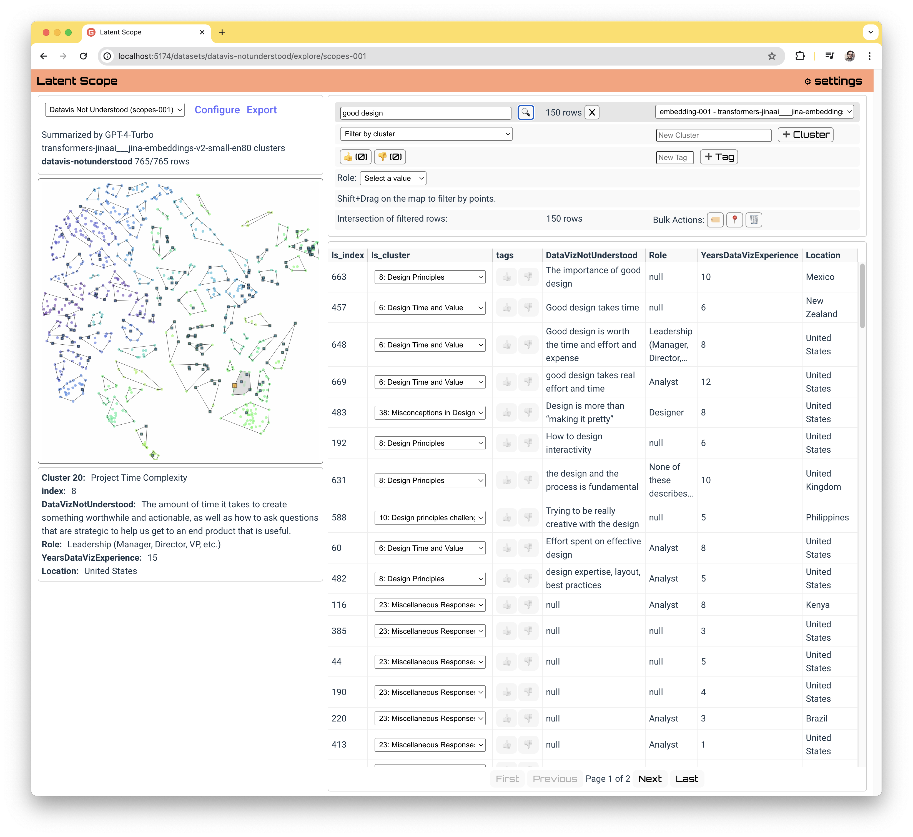You can optionally use any other embeddings you've created in the setup process, which may provide interesting insight into what different embedding models consider similar.
Filters: Cluster
You can select a cluster from the dropdown list to see only the datapoints in that cluster. You are able to change the cluster of a given datapoint using the dropdown inside the table. You can also bulk edit the cluster membership via the 📍 icon in the bulk actions menu.
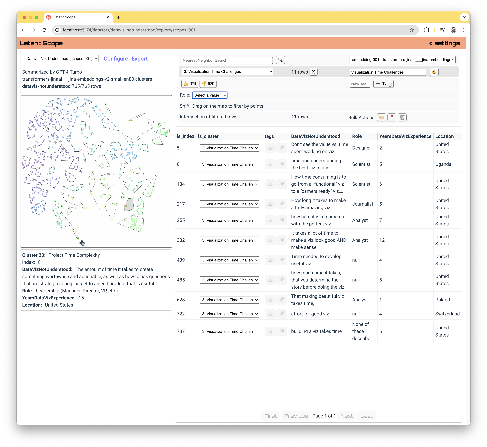Filters: Tags
If you've tagged any datapoints you can filter the table to only those with a given tag by clicking on it. You can tag datapoints at any time by clicking on the tag in the table row.
 _You can also create a new tag in the right hand side if you have no tags selected, or rename a tag if you have one selected._
_You can also create a new tag in the right hand side if you have no tags selected, or rename a tag if you have one selected._
Filters: Category
If your dataset has categorical columns (determined by Latent Scope as a column with 20 or fewer unique values when you ingest it), you can filter on their values.
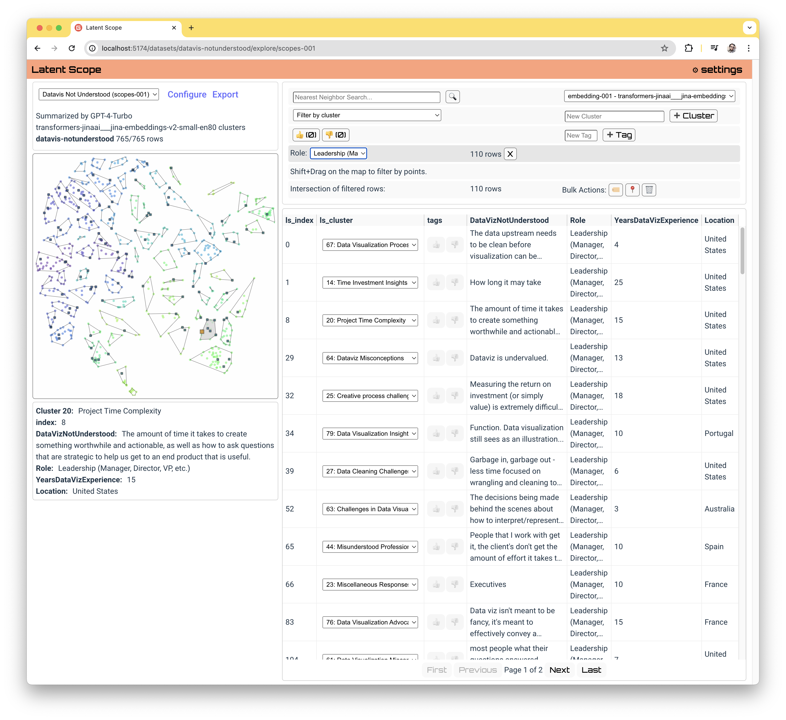In the example data for your first scope the "Role" column has a handful of unique categories, so here we are filtering on all survey respondants who identified as Leadership.
Filters: Selected points
As stated above, when you click on a point or click and drag around multiple points on the map you filter to thosse.
Curate
A large motivation behind Latent Scope is not just to get a better view of your data, but to curate it in a way that would otherwise be far too manual and cumbersome. Now that you can filter to meaningful subsets of points, there are a few actions you may want to take with them.
Bulk Actions: Clusters
The automatically generated clusters are intended to give you a head-start, a way to start organizing your data. You may find that there are datapoints that belong to the wrong cluster, or require a new cluster all together. You can update the cluster membership of filtered points via the 📍 icon and then selecting the cluster you want to set them to from the dropdown menu.
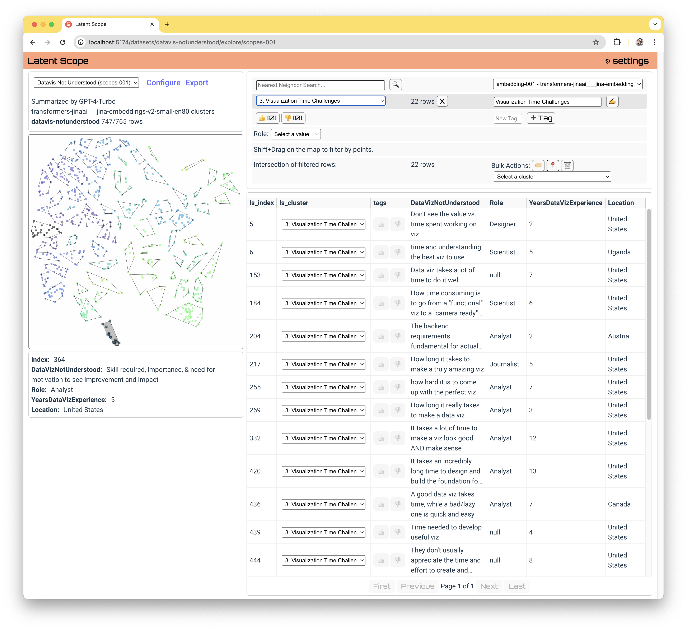Bulk Actions: Tags
You can add or remove a tag to all of your filtered points using the 🏷️ icon in the bulk action menu.
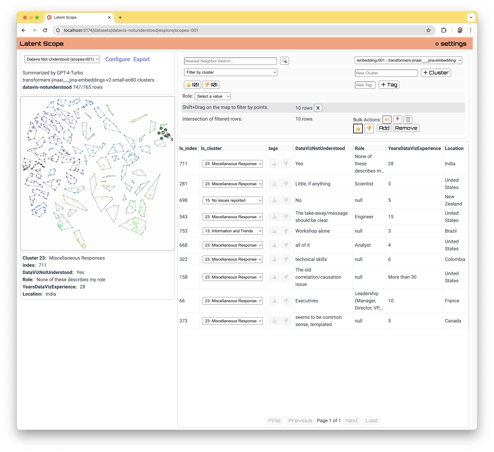Bulk Actions: Delete
If you find "bad" data in your dataset you may want to delete it from the scope altogether. You can delete filtered rows via the 🗑️ icon in the bulk action menu:
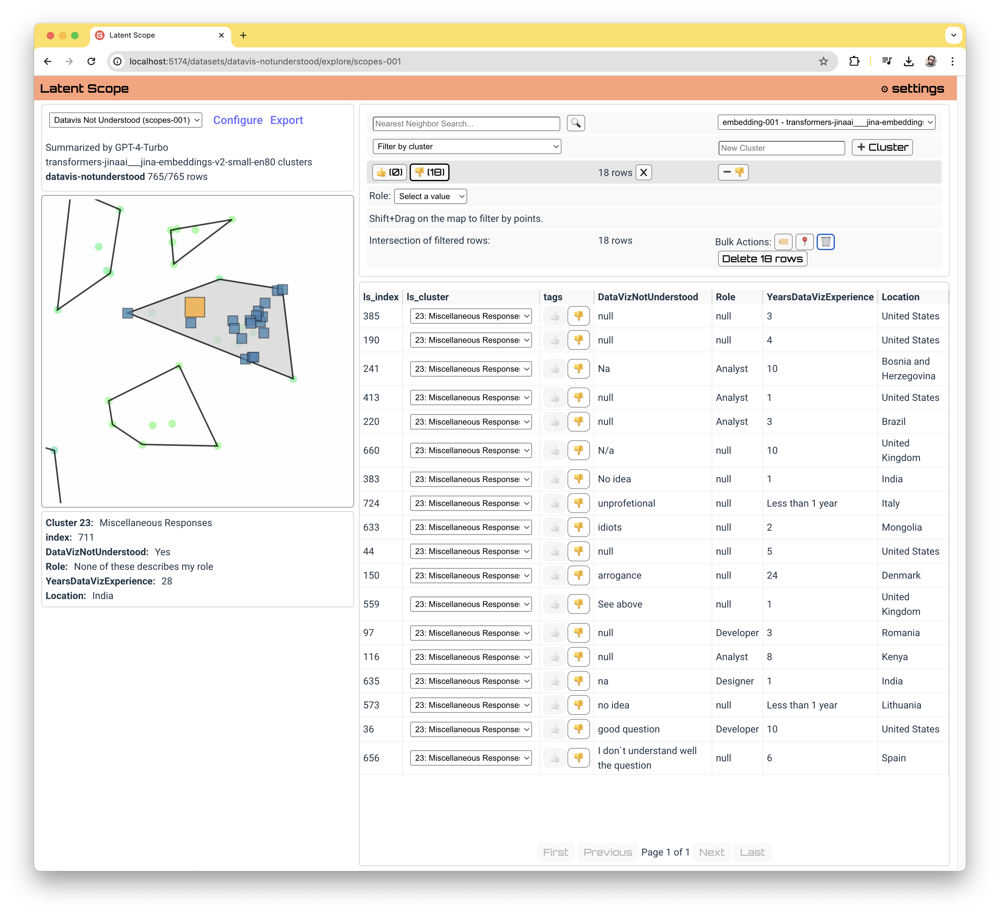When you delete rows they are only deleted from the scope data, not the original input data. You may have multiple scopes for a given input dataset and only the scope you are working on is affected.
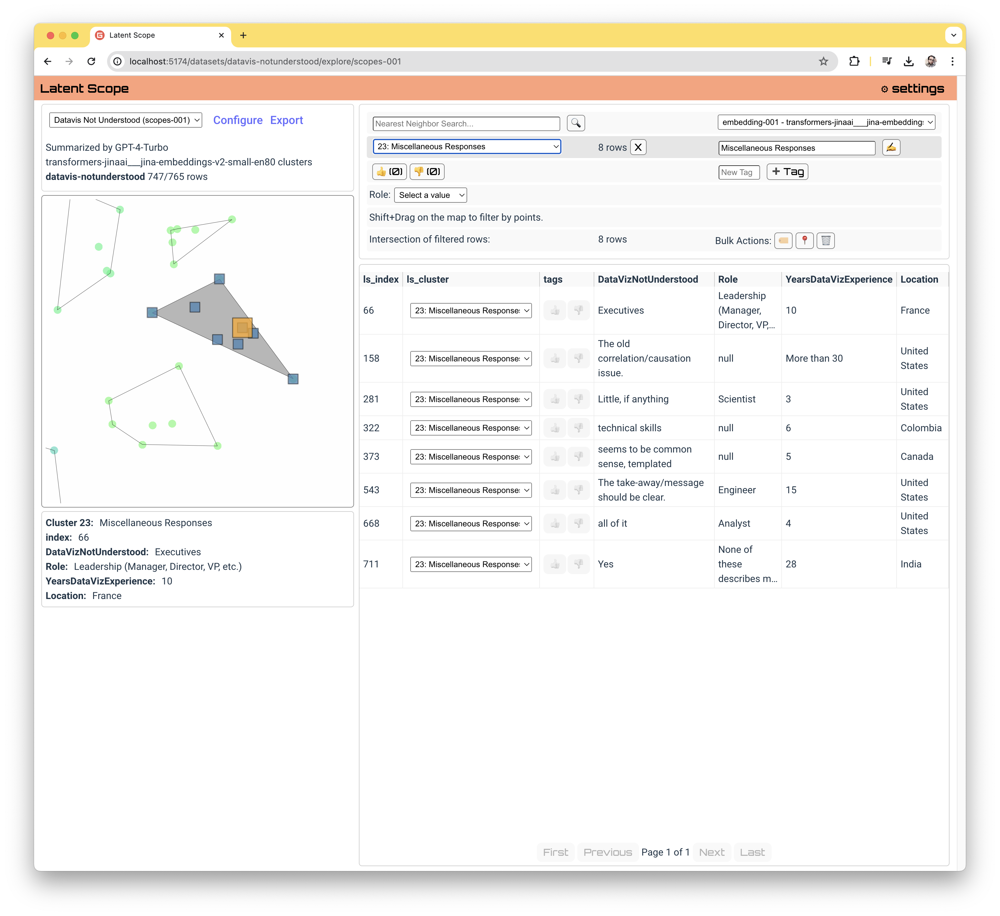Furthermore, we record all bulk actions performed on a scope in the scopes/scope-001-transactions.json file which has the original indices of the points affected by each bulk action. This way if you ever regret a decision you can figure out what was done. In the future we can make an undo feature using these transactions.
Export
Now that you've curated your data, you may want to export it for use in another part of your workflow or for publishing your own analysis. Check out the next section on Exporting data!